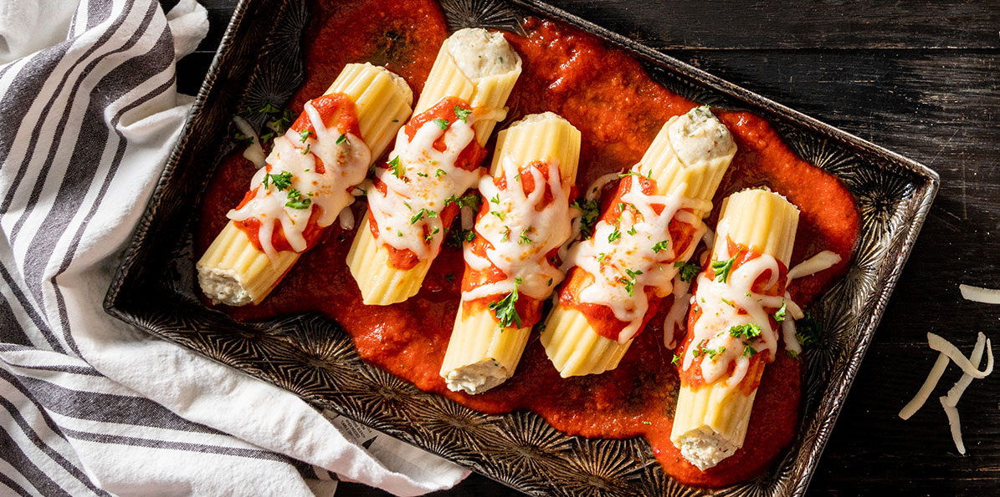

Manicotti

Description
This manicotti recipe makes a comforting dinner your family will love.
The kids like to help stuff the noodles too!
“Manicotti” (which means, literally, “little sleeves”) can refer to both a pasta shape
and an Italian dish. Manicotti shells are large, tubular, and intended to be stuffed.
Traditionally, manicotti is stuffed with a cheese mixture and baked in a tomato sauce.
Ingredients
- 5 1/2 ounces manicotti pasta
- 1 pint part-skim ricotta cheese
- 8 ounces shredded mozzarella cheese
- 3/4 cup grated Parmesan cheese, divided
- 2 large eggs
- 1 teaspoon dried parsley
- salt and ground black pepper to taste
- 1 (16 ounce) jar spaghetti sauce
Steps
- Cook manicotti in boiling water until al dente, about 10 to 12 minutes; drain and rinse with cold water.
- Preheat oven to 350 degrees F (175 degrees C).
- Mix ricotta, mozzarella, 1/2 cup Parmesan cheese, eggs, parsley, salt, and pepper in a large bowl until well combined.
- Pour 1/2 cup spaghetti sauce into an 11x17-inch baking dish. Stuff each manicotti shell with 3 tablespoons cheese mixture,
and arrange over sauce. Pour remaining sauce over the top of the shells and sprinkle with remaining Parmesan cheese.
- Bake in the preheated oven until bubbly, about 45 minutes.